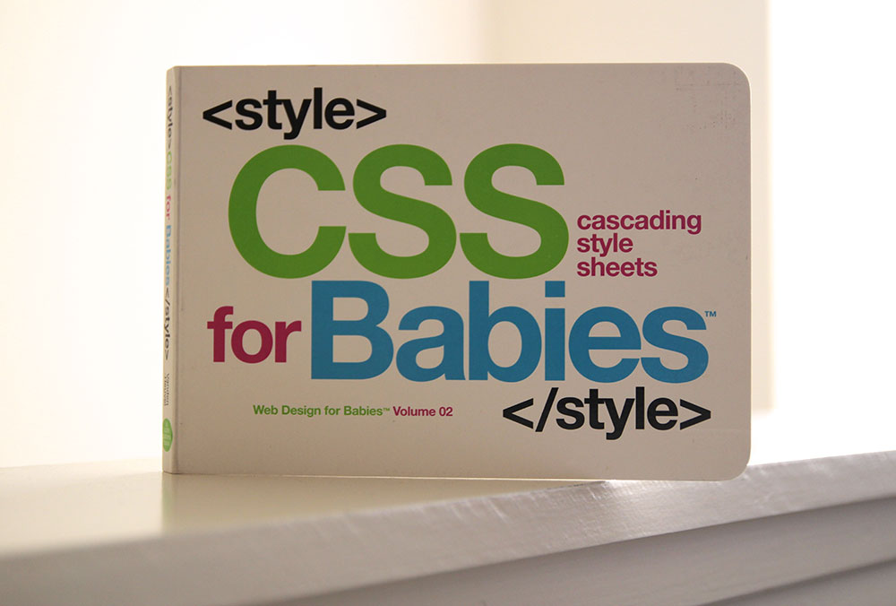

Gabriel Cziprusz | @gcziprusz
CSS forethought
=
painful to maintain CSS
Automated CSS testing = 
Regression  s
s
Few iterations later we had a stylesheet strategy
CSS is really easy
How hard can it be

html + css = site
1 CSS file and hack away
Keep appending to the bottom

Result = 8000+ lines
Ad-hoc style development

Where do we go from here?

/** DO NOT EVER CHANGE THIS! **/

Can't hack our way out
Need architecture
SMACSS
Organizational system
- Base
- Layout
- Module
- State
- Theme
150 source files
lonelyplanet.com
10 + applications
minified + distributed
2 files
core.css
fonts, grids and header/footer
application.css
page specific styles + non core components
default "system" stylesheet
CSS lines = 0
&&
styling inconsistent
reset.css
normalize.css
syntactic sugar
variables, functions(mixins), conditionals and loops
Preprocessors
It is a CSS language extension
preproccessed language -> CSS
human readable VS machine readable
SASS LESS STYLUS
SASS .sass + .scss
.SCSS
$primary-color: #333;
body { color: $primary-color; }
.SASS
primary-color: #333
body
color: $primary-colorSASS maintainability ++
@mixin respond-to($breakpoint)
@media only screen and (min-width : #{$breakpoint}px)
@content
.nav
width: 100%
+respond-to(600)
width: 50px
float: leftvendor prefix hell
.box{
-webkit-border-radius: 5px;
-moz-border-radius: 5px;
border-radius: 5px;
}
.box
border-radius: 5px
mixins, js solutions, postprocessing
Autoprefixer
decorates/augments CSS with prefixes
issue with ad-hoc
long selector chains
incorrect specificity
Need methodology
A methodology tells us how to do stuff
BEM methodology
object oriented design ideas
Block, Element, Modifier
Naming convention
Block, Element, Modifier
.site-nav {} /* Block */
.site-nav__field {} /* Element */
.site-nav__field--full {} /* Modifier */Semantics
Adds meaning to selectors
.person__hand--left {}Meaning
.js-widget.is-hiddenagree on using class selectors
selector types
#widget { } /* id */.widget { } /* class */widget { } /* element */Using classes will aid Specificity
Specificity determines which CSS rule is applied by the browsers.
Specificity chart

Don't use a grenade to dig a hole when a shovel will do
added bonus - Selector performance
parsed right to left
rightmost is the key selector
.nav .nav__block--left {
font-weight: bold;
}practical CSS challenges
- Achitecture
- Syntactic Sugar
- CSS concepts
- BEM Methodology
Browser support
not a list of browsers + versions
progressive enhancement
cutting the mustard
QuerySelector, Local Storage, ClassList, AddEventListener
:) Browsers
full experience
:( Browsers
no svg icons, no CSS3 effects, no custom fonts
documentation
self documenting code doesn't cut it
BUT.... it's a pain and it's first to go out of date :(
we have a compromise
[doc]..[/doc]
// [doc] Vertically center content.
// Use this class on the container and
// __inner on the element to be centered.
// [/doc]
.vertically-centered